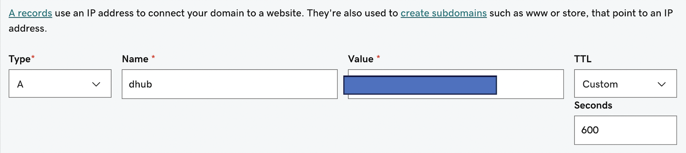

Set up JupyterHub on GCP
Setting up JH on Google Cloud
Background
- Documentation: https://z2jh.jupyter.org
- Help forum: https://discourse.jupyter.org
- Issue tracking: https://github.com/jupyterhub/zero-to-jupyterhub-k8s/issues
See examples of full config.yaml files in the config directory in the nmfs-opensci/nmfs-jhub GitHub repo.
Set-up Google Cloud
Create a Google Cloud account. Activate Compute API. It’ll be one of the options.
Create a project. There is a button somewhere.
Open the Cloud Shell. Look for ‘Connect’ or if you don’t see that look for the icon in top right that looks like box with
>_in it.
Set-up Kubernetes cluster
Note, you’ll likely be asked to activate the Kubernetes API. It gave me a link to do so and I clicked that.
Once you are inside the Cloud Shell, you create a Kubernetes cluster. This is a simple example. Create the cluster and add the admin. Use your email that you use for your Google Cloud account. You don’t need a big machine type here. This just runs the Kubernetes bit; it is not running computations.
gcloud container clusters create \
--machine-type n1-standard-2 \
--num-nodes 2 \
--zone us-west1-a \
--cluster-version latest \
jhub
kubectl create clusterrolebinding cluster-admin-binding \
--clusterrole=cluster-admin \
--user=yourname@gmail.comHere jhub is the name I gave the cluster. You will need this name in many places so don’t make it too long. Choose a zone with a region and letter. For me, I have run into problems if I don’t pin the region (us-west1, us-east1, etc) to a zone (a, b, c).
Next create the node pools for users. Here is where you might want bigger machines. How much RAM users get will be specified in your config.yaml and that will determine how many users per node. So if you will have lots of users, then you need to have a big max-nodes.
gcloud beta container node-pools create user-pool \
--machine-type n1-standard-2 \
--num-nodes 0 \
--enable-autoscaling \
--min-nodes 0 \
--max-nodes 3 \
--node-labels hub.jupyter.org/node-purpose=user \
--node-taints hub.jupyter.org_dedicated=user:NoSchedule \
--zone us-west1-a \
--preemptible \
--cluster jhubThe jhub is the name of the cluster I set when I created the cluster.
install helm 3
Install and check version installed.
curl https://raw.githubusercontent.com/helm/helm/HEAD/scripts/get-helm-3 | bash
helm versionSet up the config.yaml file. Just dummy for now.
nano config.yamlCopy this in and then Cntl-O and return to save and then Cntl-X to exit
# Chart config reference: https://zero-to-jupyterhub.readthedocs.io/en/stable/resources/reference.html
# Chart default values: https://github.com/jupyterhub/zero-to-jupyterhub-k8s/blob/HEAD/jupyterhub/values.yaml
#Install JupyterHub
Add the repository where we will install from.
helm repo add jupyterhub https://hub.jupyter.org/helm-chart/
helm repo updateInstall
helm upgrade --cleanup-on-fail \
--install jhub1 jupyterhub/jupyterhub \
--namespace jhubk8 \
--create-namespace \
--version=3.3.4 \
--values config.yamlThe variables: jhub1 is the name of the JupyterHub. You could have many on this Kubernetes cluster. We will only have 1 however. jhubk8 is the namespace of all the assets that will be associated with this JupyterHub. All your storage (pvc) will appear in this namespace and you will have to add --namespace jhubk8 to commands where you are trying to list or debug assets (like storage or killing nodes that are stuck). config.yaml is the file that has all the configuration settings.
Connect to the JupyterHub
Now it is running. Let’s try connecting via IP address
kubectl --namespace jhubk8 get service proxy-publicWill show you the public IP address. You should be able to go to that and log in with any username (no password).
Set-up https
This will be required for setting up authentication and also security.
Create a domain name
Find a domain name provider and set one up. It is not expensive. I used GoDaddy.
Create a DNS entry
Let’s pretend you set up bluemountain123.live as the domain. Go to the DNS settings for your domain. Add a type A record. This will do 2 things. First this will create the subdomain that you will use to access your JupyterHub. So let’s say you create, dhub as the type A DNS entry. Then dhub.bluemountain123.live will be the url. You can have as many subdomains as you need.

Test if the url is working
http:\\dhub.bluemountain123.live would be the url using the example domain above. Test that it is working (shows a JupyterHub login) before moving on. This is what you should see:

Set-up https on your JupyterHub
Log back into your Kubernetes cluster, by going to your project on Google Cloud and clicking the Cloud Shell icon in the top right (box with >_). Once you are on the shell, type
nano config.yamlPaste this in and save (Cntl-O, return and then Cntl-X to exit). The traefik bit is specific to GCP. Often people have trouble with GCP cluster spinning up too fast and it can’t find the letsencrypt certificate. A small delay prevents that problem. This is just for GCP. I never had that problem on Azure.
proxy:
traefik:
extraInitContainers:
# This startup delay can help the k8s container network find the
# https certificate and allow letsencrypt to work in GCP
- name: startup-delay
image: busybox:stable
command: ["sh", "-c", "sleep 10"]
https:
enabled: true
hosts:
- dhub.bluemountain123.live
letsencrypt:
contactEmail: yourname@gmail.comUpdate the JupyterHub installation
Anytime you change config.yaml you need to run this code. Replace the variables (like jhub1) with your names. jupyterhub/jupyterhub is specific to the helm chart; don’t change that.
helm upgrade --cleanup-on-fail --install jhub1 jupyterhub/jupyterhub --namespace jhubk8 --create-namespace --version=3.3.4 --values config.yamlTest if https is working
Try https:\\dhub.bluemountain123.live and you should see the JupyterHub login without that http warning.
Set up authentication
See the post on setting up authentication for instructions.
Deleting the Kubernetes cluster
- Go to dashboard. Make sure you are in the project with the Kubernetes cluster.
- Click on the Kubernetes API button and then click on the cluster with your JHub
- At that point, you will see the delete button at the top. Click that.
- Wait awhile and make sure all the associated VMs and storage are deleted.
- Go back onto billing in a few days and make sure it is not charging you. If it is, something associated with the JHub didn’t get deleted.
Post-installation checklist
- Verify that created Pods enter a Running state:
kubectl --namespace=jhubk8 get pod - If a pod is stuck with a Pending or ContainerCreating status, diagnose with:
kubectl --namespace=jhubk8 describe pod <name of pod> - If a pod keeps restarting, diagnose with:
kubectl --namespace=jhubk8 logs --previous <name of pod> - Verify an external IP is provided for the k8s Service proxy-public.
kubectl --namespace=jhubk8 get service proxy-public - If the external ip remains
, diagnose with: kubectl --namespace=jhubk8 describe service proxy-public